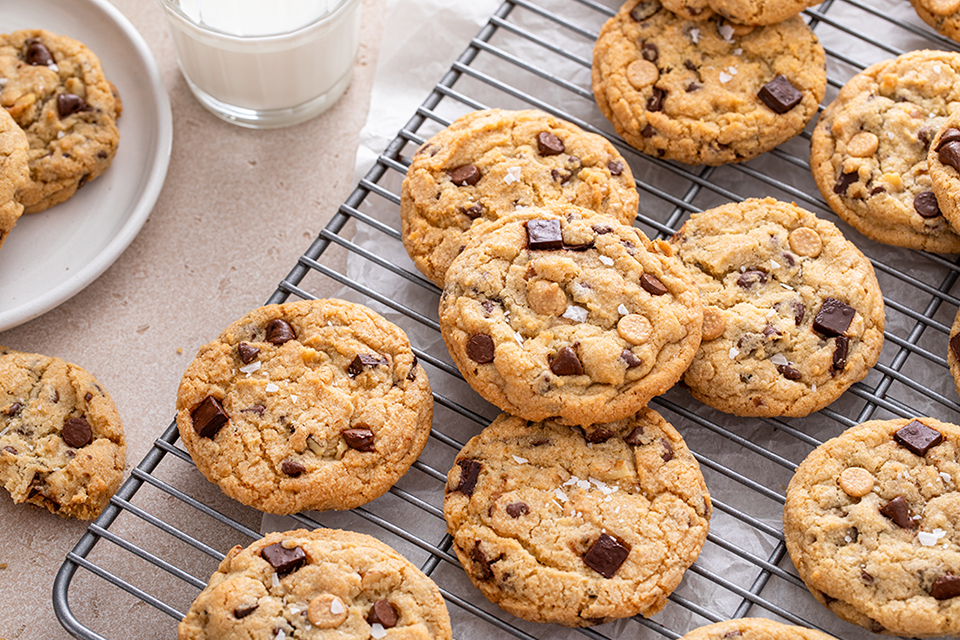
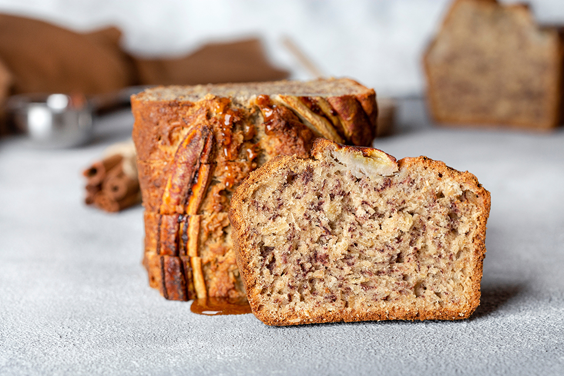
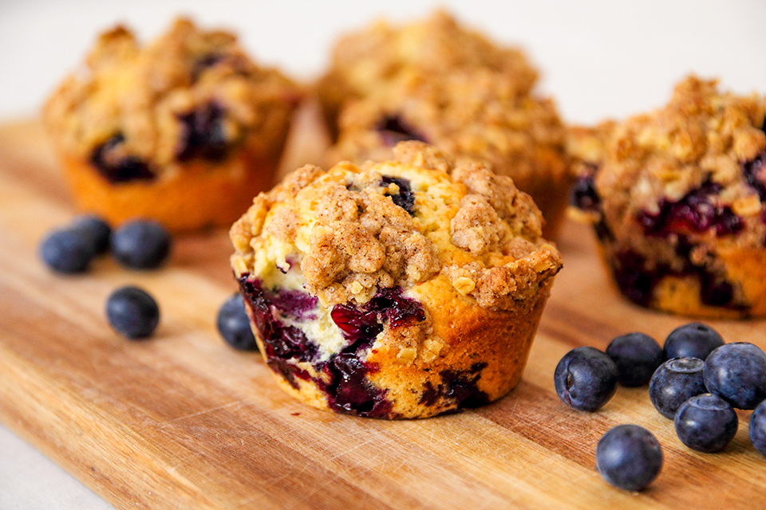
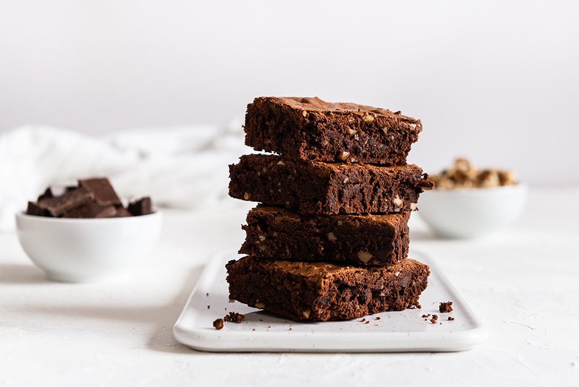
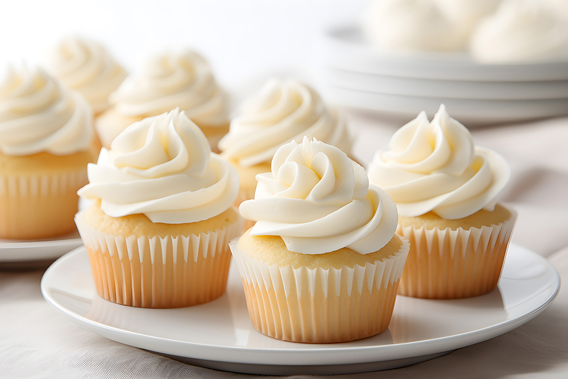
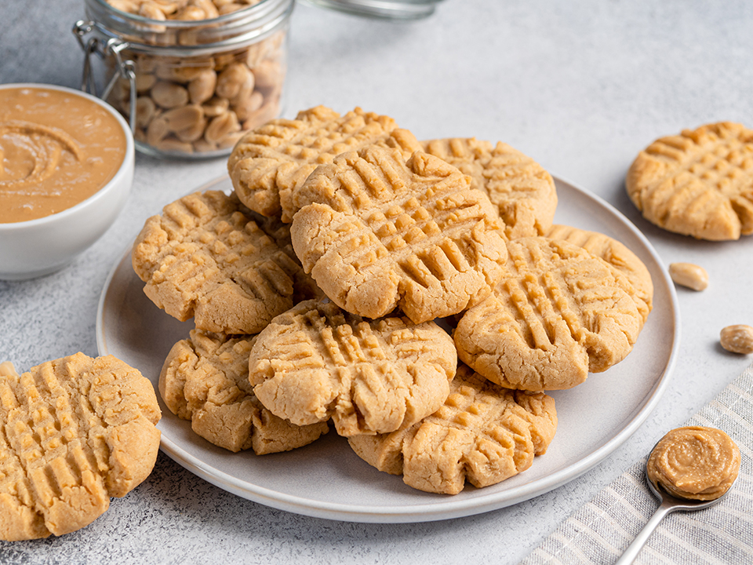
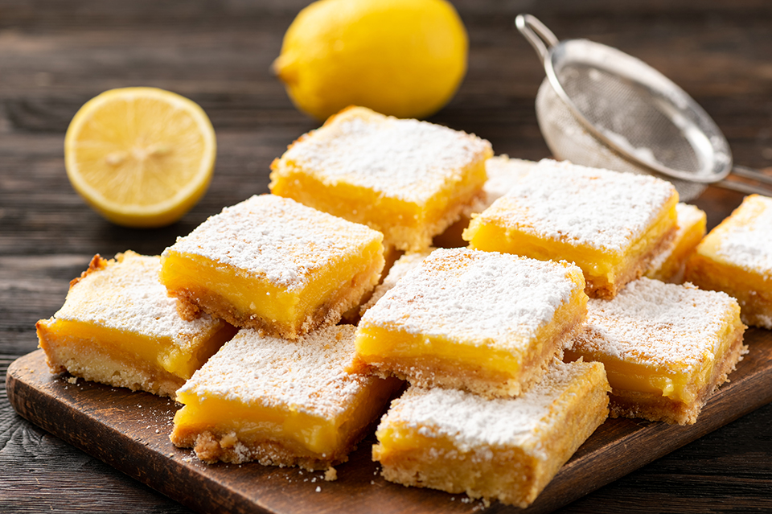
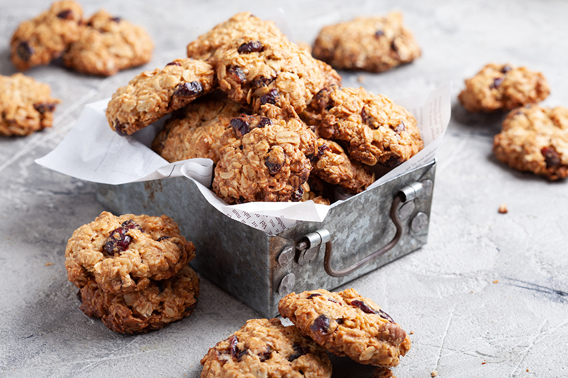

Recipes selected for this term

1. Chocolate chip cookies
Ingredients:
- 1 cup (2 sticks) unsalted butter,
softened
- 1 cup granulated sugar
- 1 cup brown sugar, packed
- large eggs
- 2 tsp vanilla extract
- 3 cups all-purpose flour
- 1 tsp baking soda
- 1/2 tsp salt
- 2 cups semisweet chocolate chips

2. Banana Bread
Ingredients:
- 3 ripe bananas, mashed
- 1/3 cup melted butter
- 1 cup sugar
- 1 egg, beaten
- 1 tsp vanilla extract
- 1 tsp baking soda
- Pinch of salt
- 1/2 tsp salt
- 1 1/2 cups all-purpose flour

3. Blueberry Muffins
Ingredients:
- 1 1/2 cups all-purpose flour
- 3/4 cup granulated sugar
- 1/2 tsp salt
- 2 tsp baking powder
- 1/3 cup vegetable oil
- 1 egg
- 1 1/2 cups fresh or frozen blueberries

4. Classic Brownies
Ingredients:
- 1 cup (2 sticks) unsalted butter
- 2 cups granulated sugar
- 4 large eggs
- 1 tsp vanilla extractr
- 1 cup all-purpose flourl
- 1/2 cup cocoa powder
- 1/4 tsp salt
- 1/2 cup chopped nuts (optional)
Previous Recipes

5.Vanilla Cupcakes
Ingredients:
- 1 1/2 cups all-purpose flour
- 1/4 teaspoon salt
- 1/2 cup (1 stick) unsalted butter, softened
- 1 cup granulated sugar
- 3 large eggs
- 1 teaspoon vanilla extract
- 1/2 cup whole milk

6. Peanut Butter Cookies
Ingredients:
- 1 cup granulated sugar
- 1 large egg
- 1 teaspoon vanilla extract
- 1/2 teaspoon baking soda
- 1/4 teaspoon salt
- 1 cup peanut butter

7. Lemon Bars:
Ingredients:
- 1 cup (2 sticks) unsalted butter, softened
- 1/2 cup powdered sugar
- 2 cups all-purpose flour
- 4 large eggs
- 2 cups granulated sugar
- 1/3 cup all-purpose flour
- 1/2 cup fresh lemon juice
- Zest of 2 lemons
- Powdered sugar for dusting (optional)

8. Oatmeal Raisin Cookies
Ingredients:
- 1 cup (2 sticks) unsalted butter, softened
- 1 cup packed brown sugar
- 1/2 cup granulated sugar
- 2 large eggs
- 1 teaspoon vanilla extract
- 1 1/2 cups old-fashioned rolled oats
- 1 cup all-purpose flour
- 1/2 teaspoon baking soda
- 1/2 teaspoon ground cinnamon
- 1/4 teaspoon salt
- 1 cup raisins